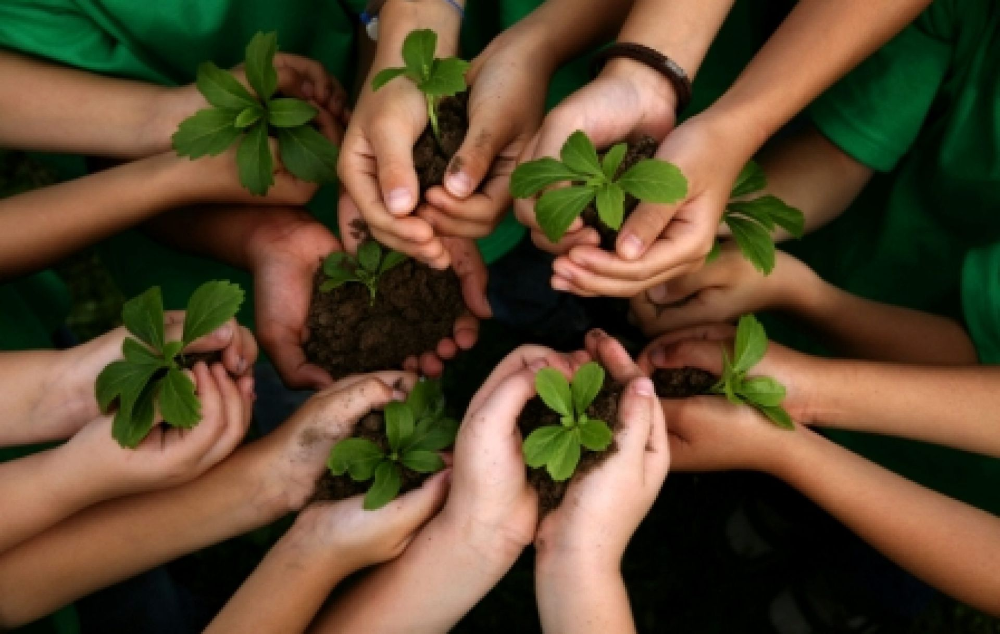
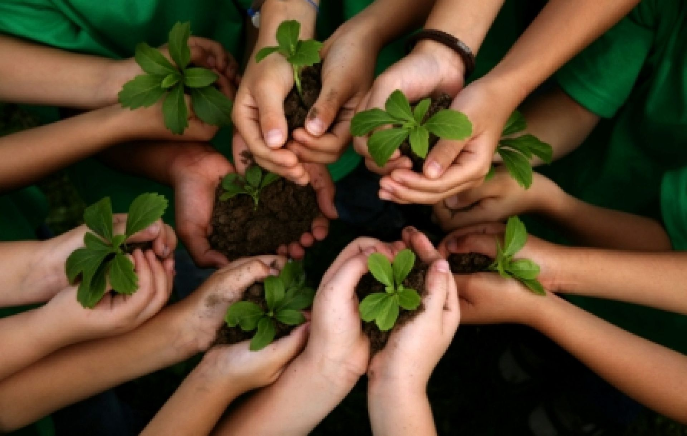

Nossos Projetos
O Centro da Criança e do Adolescente - CCA/SEMEAR atende uma média de 70 crianças e adolescentes (06 a 14 anos) por ano em situação de vulnerabilidade e risco, contribuindo na sua proteção integral em conjunto com a família e Estado, promovendo o desenvolvimento de suas potencialidades, a partir de ações sócio educativas
A Casa Lar e Saica atendem 30 crianças em acolhimento institucional divididas em duas casas, tendo como prinicipal objetivo acolhe-las até que tenham sua guarda restabelecida pelo Estado.
Nossas Atividades
A Casa da Criança e do Adolescente oferece atividades como:
Esportes e Recreação
Cidadania, Valores, Direitos e Deveres
Ensino de Informática
Atendimento Psicológico
Sensibilização Ambiental
Passeios Culturais
Ensino de Música
Aulas de Inglês

 
